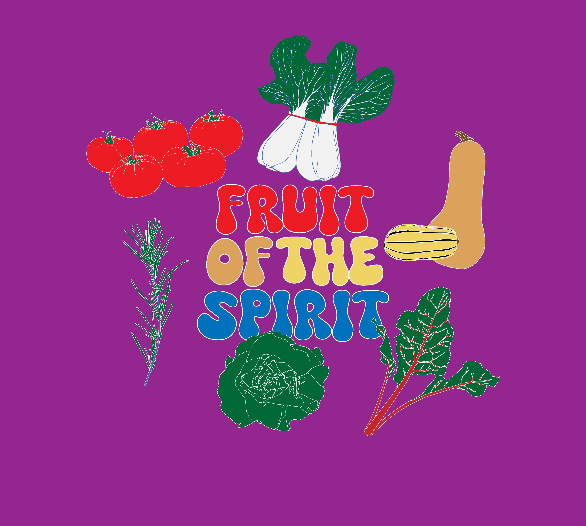
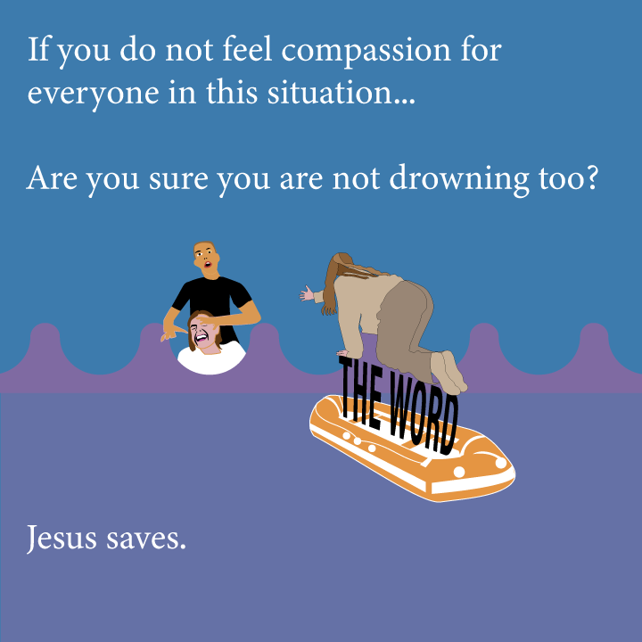
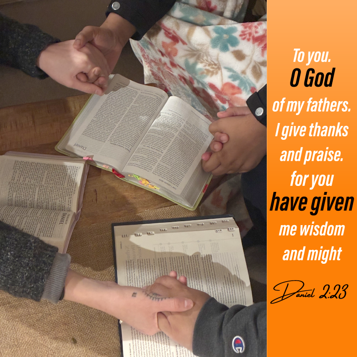

Haven House — Social Media & Strategy
Managed social media content creation and marketing strategy for Haven House, a Christian fellowship house. Helped reconfigure their overall business strategy to better reach and engage their community during my Spring Semester at Stockton University.
Social Media Content
Social media posts, graphics, and content created for Haven House's channels.




Video Showcase
Video promotions and reels highlighting community activities and campaign messaging.
Carry the Love Tour | Haven House Event Recap
I filmed, directed, and edited this event recap for Haven House, capturing the energy and highlights of the Circuit Riders Carry the Love Tour. The final video went on to become the most liked video on Haven House’s YouTube channel.
Fishers of men | Haven House Event Promo
A fun promotional video I created for an upcoming Haven House event. What starts as a simple fishing trip takes an unexpected turn when the catch of the day isn't a fish at all. Filmed, directed, and edited to grab attention and drive event awareness on social media.
Carry The Love Tour 2 | Haven House Event Clips of Faith
Filmed and edited for Haven House, this video captures the heart of the Circuit Riders event, worship, fellowship, and genuine moments of connection as the community came together in faith..